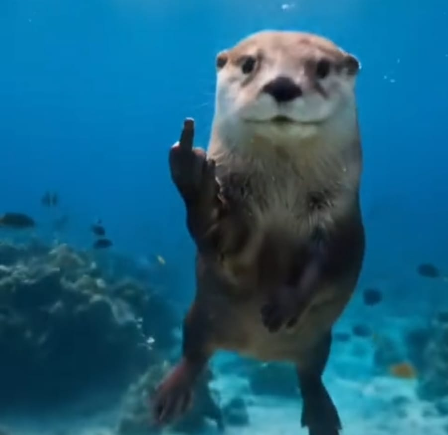
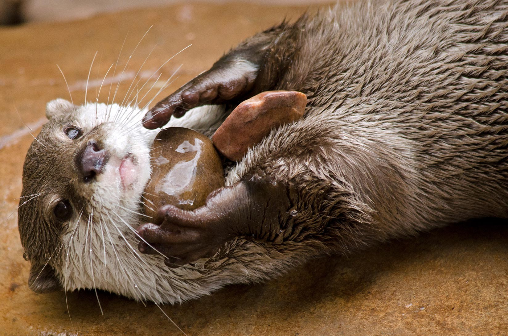
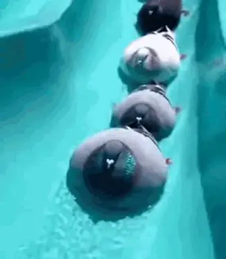

get flipped off by a otter

FACTS
did you know:otters are one of the most social marine animals on earth?
LINUX DISTROBUTION LIST
here are one of the best linux distrobutions on a list:
1:Linux Mint
2:ubuntu
3:kubuntu
4:zorinOS
1:Linux From Scratch LFS *not really a distro*
2:gentoo
3:crux
4:nixos
1:steamOS
2:nobara linux
3:cachyOS
4:bazzite linux
1:Linux Mint
2:bazzite linux
3:arch installed via archinstall
4:zorinOS
cachyOS
TUTORIAL FOR OLD WINDOWS ON CHROMEBOOKS OR COMPUTERS
here is a tutorial!
1st open an web browser like chrome
2nd: in the URL bar type https://copy.sh/v86
3rd:scroll until you see old windows versions
4th: larp and enjoy!*use linux*
they use rock to smash food shells and can remember things like hunting spots or there food place etc
my favorite otter species out of all gotta be the small clawed asian otters and sea otters
pretty fast for an marine animal!
here is an example:

cute right?
here is a picture:
and its damage:
this devestating tornado had windspeeds of 321 miles per hour of 517 kilometers per hour even today it stands as the tornado with the highest windspeeds ever recorded
with its extreme winds it reduced almost everything in its path to bare foundations and rubble
sigeon ok
